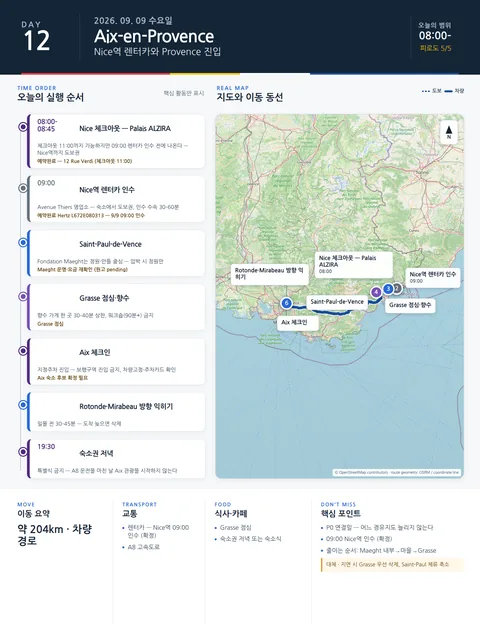

Day 12 · 9/9 수 · Aix

오늘의 주요 장소


P0 연결거점 이동양쪽 챕터
- 핵심 실행
- NCE 인수→Saint-Paul→Grasse→Aix
- 권장 출발
- 08:30 Nice 출발
- 완충
- 렌터카 인수 60–90분
시간표
Nice
| 시간 | 일정 | 실행 포인트 |
|---|---|---|
| 07:00–08:00 | 체크아웃·간단한 아침 | 차량용 물·간식 준비 |
| 08:15 전후 | NCE Terminal 2 렌터카 인수 | 자동변속·보험·편도반납·차체촬영 |
| 09:30–11:00 | Saint-Paul-de-Vence | 골목·성벽·짧은 스케치 |
| 11:00–12:00 | 가벼운 점심·이동 | 긴 코스식 금지 |
| 12:30–14:00 | Grasse vieille ville | 향수 시향 또는 짧은 공방 |
| 14:30–17:00 | Grasse → Aix | A8 정체에 따라 변동 |
| 17:00 이후 | Aix 체크인 | 다음 챕터의 Day 1로 연결 |
Aix
| 상대시간 | 일정 | 실행 포인트 |
|---|---|---|
| 도착–+30분 | 숙소·지정주차장 진입 | 보행구역 진입금지, 숙소 안내 우선 |
| +30–+90분 | 체크인·수하물·차량고정 | 냉방·주방·세탁·주차카드 확인 |
| +90–+135분 | 최소 장보기 | 다음 날 시장을 보므로 물·아침재료 위주 |
| 일몰 전 30–45분 | Rotonde·Cours Mirabeau 방향 익히기 | 도착이 늦으면 삭제 |
| 19:30 이후 | 숙소권 저녁 또는 숙소식 | 특별식 금지 |
피로도
5/5
이 날의 장소
일자별 시간표와 본문 표기에서 찾은 것이다. 하루의 전부가 아니라 장소 카드가 있는 것만 담는다.
이 날의 메모
Nice
렌터카 인수, Saint-Paul-de-Vence·Grasse, Aix 이동
인수가 늦으면 Grasse를 먼저 삭제하고, 정체가 심하면 Saint-Paul만 본다.
Aix
Saint-Paul·Grasse에서 Aix 도착, 주차와 생활권 정착
Saint-Paul·Grasse와 A8 운전을 마친 날에는 Aix 관광을 시작하지 않는다.
상세 실행 확인
- 최고 리스크
- 인수지연·체크인·주차
- 우선 삭제
- Grasse 실내→Saint-Paul 체류 축소
- 대체안
- Grasse 실내 후 Aix 조기도착
- 식사·휴식
- Grasse 점심
- 잠금 필요
- 렌터카·Aix 숙소
Google 실행지도
Nice → Aix 이동 — Saint-Paul-de-Vence · Grasse 경유
지도 펼치기
지도는 펼칠 때만 불러옵니다.
구간별 길찾기
- AMMI Masséna → NCE T2 · 대중교통
- NCE T2 → Saint-Paul 공영주차 (Route de Vence) · 자동차
- Saint-Paul 공영주차 (Route de Vence) → Saint-Paul-de-Vence · 도보
- Saint-Paul-de-Vence → Grasse Notre-Dame des Fleurs 주차장 · 자동차
- Grasse Notre-Dame des Fleurs 주차장 → Grasse 구시가지 (대성당 기준) · 도보
- Grasse 구시가지 (대성당 기준) → Adagio Aix Centre · 자동차
Daily Action Map

실제 좌표와 OpenStreetMap을 사용한 실행용 요약입니다. 도로·대중교통 상황은 출발 직전에 다시 확인하세요.